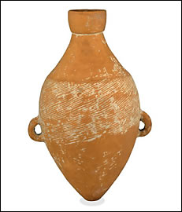

Early settlers in the Yellow River BasinThere is evidence that people have lived in the Yellow River Basin since at least 6000 B.C. They farmed the land, kept animals, and built permanent homes on the banks of the Yellow River. 
Pottery amphora from around 4500 B.C.
|